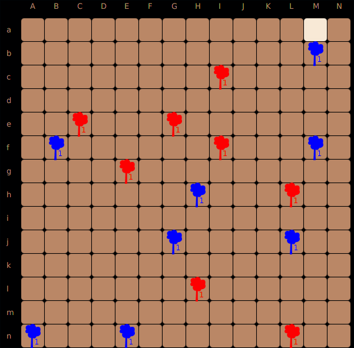
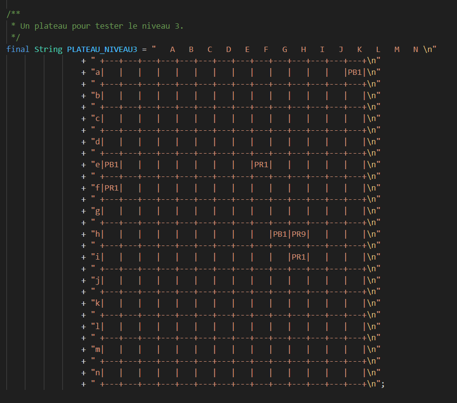
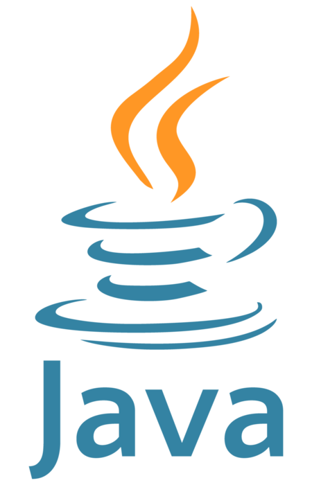

Biosphère 7 est un projet que j'ai réalisé lors de ma
première année de BUT, il se séparait en deux phases. La première consistait à coder en solo le plus de
règles
(prédéfinies) d'un jeu de plateau, tandis que la seconde
qui se faisait en duo, consistait a créer une IA capable de jouer au jeu de plateau et de la faire concourir
faces aux IA des autres élèves lors de tournois qui se passaient chaque nuit. Lors de la nuit "finale" le
dernier tournoi determinait le classement des IA.
La première partie du projet ne laissait pas grande liberté de travail, il fallait respecter les
règles du jeu et faire en sorte que l'IA renvoie un coup valide sous la forme d'un tableau de string comme
ceci :

La seconde partie cependant nous laissait plus de liberté, a moi et a mon binôme Simon Pascal puisque nous pouvions
choisir et reflechir librement a quelle stratégie nous allions donner a notre IA.
Au départ, du a une faille dans le fonctionnement du jeu, nous avions trouvé une startégie qui
forçait un match nul au pire et une victoire au mieux. La faille était que le plateau était vide au depart,
que la seule première action possible est de poser un "pion" et qu'il était constamment possible de detruire
ce "pion" et donc de forcer nul (si on ne commence pas). Cependant un autre élève s'en est rendu compte et a
prévenu les organisateurs, qui ont par la suite modifié le plateau de base pour ne plus qu'il soit vide au
départ.
Nous sommes par la suite parti sur une stratégie MinMax, qui lisait les meilleurs coups sur 1.5
tours (joueur 1 joue, puis joueur 2 joue). Notre stratégie à dominé le tournoi pendant plus d'une semaine.
Cependant avec les stratégies adverses s'améliorant, l'IA n'est arrivé que 7eme (sur 25) lors du tournoi
final.
RÉSUMÉ DU PROJET :
OUTILS UTILISÉS
-  Code en Java répondant a une demande préalable, auto-organisation et réflexion transmise en Java
- Utilisation de bash pour manipuler des fichiers et créer des connexions directes.
COMPÉTENCES ACQUISES / AMÉLIORÉES
- Management de projet (temps et repartition des tâches)
- Réflexion autonome et efficace
- Niveau de programmation
- Amélioration et optimisation de code (en temps et en espace)